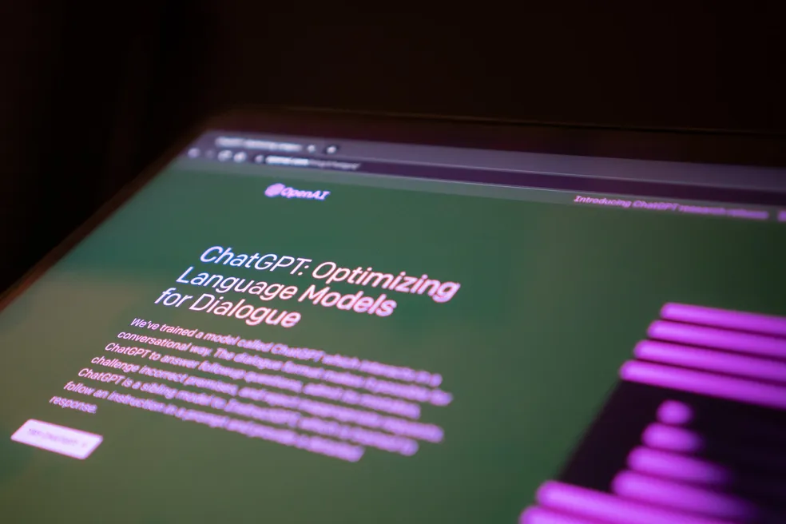
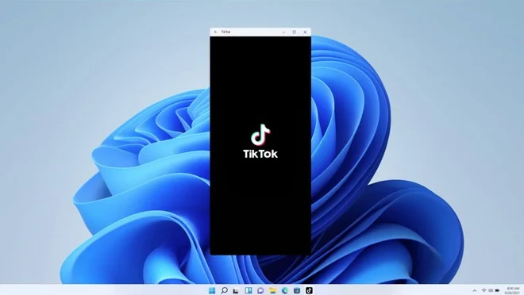

Segurança do aplicativo Android - Proteção sempre ativa
Você usa aplicativos em seu telefone Android todos os dias. Mas você já se perguntou o que acontece nos bastidores para garantir que eles estejam seguros? Saiba como o Google Play Protect ajuda a garantir que os aplicativos Android que você baixa e usa estejam seguros e livres de malware.
Saiba mais em https://www.android.com/safety/security
OpenAI anuncia ChatGPT para Android
Usuários já podem fazer a pré-encomenda na Google Play Store
Segundo o portal TechCrunch, o app para Android parece ser igual ao para iOS — Foto: Jonathan Kemper/Unsplash
Em maio, a OpenAI lançou o ChatGPT para iOS. Agora, a empresa anunciou que o chatbot baseado em inteligência artificial terá, a partir desta semana, uma versão também para o sistema operacional Android, e os interessados já podem fazer a pré-encomenda na Google Play Store.
Subsistema do Windows para Android receberá melhorias no controle de aplicativos com mouse
A Microsoft disponibilizou, na quinta-feira (20), uma atualização do Subsistema do Windows para Android (WSA), que chega à versão 2306.40000.4.0 para membros do programa Insider. Com a nova versão da ferramenta que permite executar aplicativos do sistema do Google no Windows 11, usuários receberão melhorias de recursos e desempenho. Uma das principais mudanças é o suporte para a rede local (Local Networking). Isso permitirá que os aplicativos do Android se conectem na mesma rede do Windows 11, de modo que respeitem as regras locais definidas para o firewall e funcionem com uma VPN. Ainda em fase experimental, essa configuração deve substituir a seção “Advanced Networking”.
Outra mudança trazida pela atualização é a possibilidade de alterar a pasta compartilhada do subsistema. Basta acessar as configurações avançadas (Advanced Settings) para selecionar uma pasta que será utilizada para compartilhar arquivos entre a máquina virtual e o Windows.
A ferramenta passará a alertar o usuário sobre aplicativos que tentam obter uma permissão que o subsistema não possui. O Android 13 é atualizado com os patches de segurança mais recentes, e o Linux é atualizado para a versão 5.15.104.
As demais mudanças incluem pequenas melhorias na experiência da plataforma, como um novo modo de tela cheia e otimizações para controles com mouse e toque, melhorando o suporte do gesto de “clicar e arrastar” e facilitando o compartilhamento de arquivos.